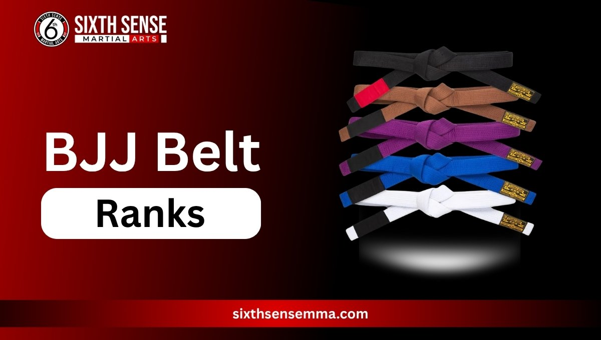
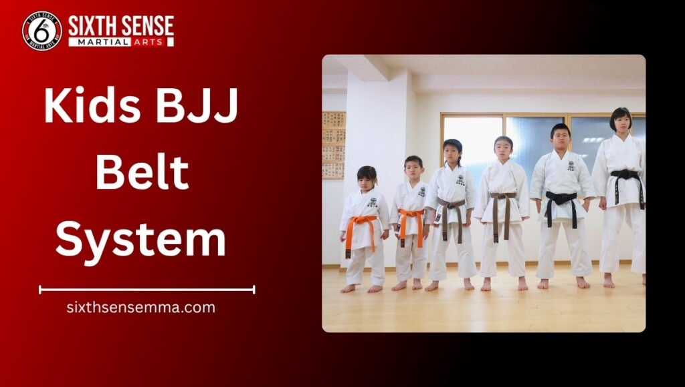
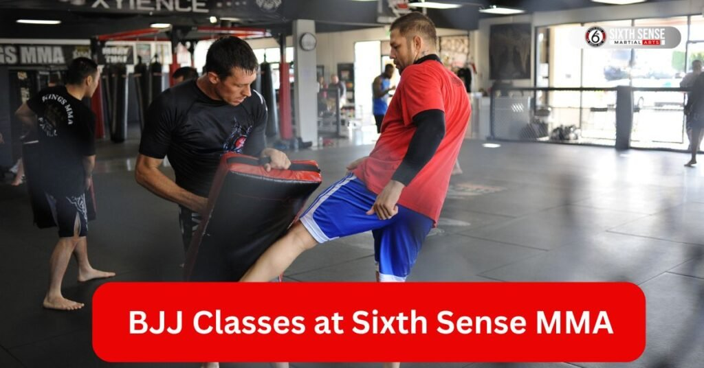

BJJ Belt Ranks: A Look at the Brazilian Jiu-Jitsu Ranking System

Bjj belt ranks: Ever wondered what those colorful belts mean in Brazilian jiu-jitsu? BJJ belt ranks are a big deal marking your progress in this amazing martial art. They show how much you’ve learned from basic moves to advanced techniques. Each belt like white belt or black belt tells a story of dedication. Let’s break it down simply.
The ranking system in Brazilian jiu-jitsu isn’t just about looks. It’s a way to track growth starting with white belt level for beginners. As you train you move through belt promotions aiming for that black belt level one day. This belt system keeps everyone motivated You are a kid or an adult. Even the highest rank like red belt feels within reach with hard work.
What Are BJJ Belt Ranks?
Curious about bjj belt ranks? They’re a key part of Brazilian jiu-jitsu showing where you stand in your training journey. Think of it like a roadmap. Every belt from white to black represents skills you’ve picked up. It’s not random each one has a purpose.
Start with white belt the starting point for everyone. Then comes blue belt where you start getting the hang of things. Purple belt brings more challenge while brown belt means you’re close to mastery. Black belt is the big goal earned after years of effort. Beyond that coral belt and red belt honor the top jiu-jitsu experts. This belt order helps students see their progress clearly.
The belt system in bjj also ties to the art of Brazilian jiu-jitsu. It pushes you to improve step by step. You are aiming for next belt rank or just enjoying the ride it’s all about growth. Even the international Brazilian jiu-jitsu federation recognizes this structure. So every belt signifies a milestone worth celebrating.
The Adult BJJ Belt System
Ready to dive into the adult belt system in Brazilian jiu-jitsu? This progression through the bjj belt system is where adults build their skills step by step. It starts with white belt and climbs all the way to black belt with each stage offering new challenges. Let’s explore how this ranking system shapes your journey from white belt to black belt.
The adult rank in Brazilian jiu-jitsu follows a clear path. You begin as a beginner learning basics and work toward higher belt levels. Belt promotions come with time and effort guided by the jiu-jitsu belt rankings. Even the toughest moments make sense when you see the belt color change. It’s a rewarding process for anyone passionate about this martial art.
White Belt Basics
New to jiu-jitsu? White belt is where it all starts. This white belt level is for beginners focusing on simple moves and positions. You’ll learn to fall safely and grasp basic techniques.
Training at this stage builds confidence. Expect to spend time mastering fundamentals like escapes and basic submissions. White belt to black belt begins here so every class counts. Patience is key as you aim for that next belt.
Blue Belt Skills
Got past white belt? Blue belt level is the next step. Here you start refining your jiu-jitsu belt skills. Expect to handle more complex techniques and spar with others.
This stage takes dedication. You’ll work on defense and offense showing growth in Brazilian jiu-jitsu. Many spend a couple of years here preparing for purple belt. It’s a fun challenge if you love the grind.
Purple Belt Growth
Reaching purple belt feels like a win. This purple belt level means you’re getting serious about jiu-jitsu belt rankings. You’ll tackle advanced moves and start teaching others.
Training gets deeper now. Focus shifts to strategy and creativity on the mat. It might take three to four years but the progress is clear. This belt signifies you’re on track for brown belt.
Brown Belt Mastery
Brown belt is a big deal. At this brown belt level you’re nearing the top of the adult belt system. Your skills in Brazilian jiu-jitsu are sharp with a focus on teaching and refining techniques.
You’ve likely trained for years by now. This stage prepares you for black belt achievement testing your knowledge. It’s a proud moment showing mastery in every aspect of jiu-jitsu.
Black Belt Achievement
Finally black belt! Achieving the black belt is a huge milestone in jiu-jitsu belt ranks. It shows years of hard work and deep understanding of martial art techniques.
This black belt level comes after about 10 years for most. You’ll lead classes and inspire others. It’s not the end some even aim for red and white belt status. Celebrate this achievement in bjj!
Higher Belt Levels Beyond Black
Think you’ve seen it all with black belt? Higher belt levels in Brazilian jiu-jitsu take things further honoring the true masters. After black belt achievement the journey continues with rare ranks like coral belt and red belt. These stages are less about learning new moves and more about legacy in this martial art.
Only a few reach these heights. The belt ranking system extends beyond black to recognize decades of dedication. Brazilian jiu-jitsu students at this point often teach and shape the sport’s future. It’s a cool way to see how belt promotions keep evolving even at the highest rank.
Coral Belt Honors
What’s a coral belt? This coral belt level is a special honor in jiu-jitsu belt ranks given to those with 50 years or more of training. It sits between black and red marking a lifetime in Brazilian jiu-jitsu.
You won’t see many at this stage. It’s about sharing wisdom not just fighting. The belt color stands out reflecting a unique role in the belt system. Pretty amazing to think about right?
Red Belt Legacy
Red belt is the top. This red belt level in bjj belt system is the ultimate sign of mastery awarded after 60-70 years. It’s rare held by legends who’ve shaped jiu-jitsu belt rankings.
These folks are living history. They guide the next generation earning respect worldwide. The red and white belt phase comes first but red belt legacy lasts forever. It’s a big deal in the art of Brazilian jiu-jitsu.

Kids BJJ Belt System
Got a young one interested in jiu-jitsu? The kids bjj belt system is a fun way to start. Unlike adults kids follow a different path with belt system for children focusing on growth and safety. It’s all about building skills early in Brazilian jiu-jitsu.
This ranking system adapts to young learners. They earn stripes before new belts keeping things exciting. Whether aiming for blue belt or higher it’s a great foundation. Parents love watching their kids shine on the mat.
Youth Belt Colors and Stripes
What colors do kids get? Youth belt colors in the jiu-jitsu belt system start with white then add stripes. Each stripe shows progress toward the next belt like blue or purple belt.
Kids earn these through effort and fun drills. The belt order might include green belt or others depending on the school. Stripes make it easy to track growth without rushing. It’s a neat system for young students.
How Young Students Advance
How do kids move up? Young students advance in Brazilian jiu-jitsu by mastering basics and showing good behavior. Teachers watch their progress over months.
Classes focus on skills and teamwork. A white belt to black belt journey starts slow with stripes leading to new belt rank. It takes time but every step builds confidence. Pretty cool to see them grow huh?
How BJJ Belt Promotions Happen
Wondering how belt promotions work in Brazilian jiu-jitsu? This part of the bjj belt system is all about earning your next belt rank through hard work. It’s not just about time on the mat teachers look at your skills and attitude. Let’s talk about what goes into moving up the jiu-jitsu belt rankings.
Every step feels like a win. The belt system in bjj keeps you motivated You are aiming for purple belt or black belt level. Instructors decide when you’re ready often based on your performance in class. It’s a fair process that respects the art of Brazilian jiu-jitsu making each promotion special.
Factors in Earning a New Belt Rank
What gets you a new belt? Factors in earning a new belt rank include technique consistency and sparring ability. Teachers watch how well you apply moves like submissions or defenses.
Attitude matters too. Showing respect and helping others can tip the scales. Your progress through the bjj belt system depends on these elements. It’s not a race focus on growth and the next belt will come.
Typical Time to Reach Each Belt Level
How long does it take? Typical time to reach each belt level varies. White belt to blue belt might take 2-3 years depending on practice. Purple belt level often follows after another 2-4 years.
Brown belt mastery could be 5-6 years from blue while black belt achievement takes around 10 years total. These are rough estimates in the jiu-jitsu belt rankings. Everyone’s journey differs so enjoy the ride!
Why the BJJ Belt System Matters for Training
Ever think about why the bjj belt system makes such a difference? This ranking system in Brazilian jiu-jitsu gives your training a clear direction. Each belt from white belt to black belt pushes you to improve your skills. It’s like a guide that keeps things exciting.
Motivation is a big part of it. Seeing that next belt rank come closer keeps you going even on tough days. The belt system also builds a sense of community among jiu-jitsu students. Plus it helps you track progress in this martial art making every class feel worthwhile. Pretty neat right?

BJJ Classes at Sixth Sense MMA
Looking for a place to start your Brazilian jiu-jitsu journey? Sixth Sense MMA offers bjj classes that fit all levels from white belt basics to black belt training. Our team creates a welcoming spot where you can grow at your own pace. It’s perfect for anyone eager to dive into this belt system.
We focus on fun and learning. You are aiming for blue belt or higher our classes cover it all. Sixth Sense MMA brings expert guidance to help you through jiu-jitsu belt rankings. Ready to give it a try? You’ll feel right at home here.
Our Approach to Belt Progression
How do we handle belt progression at Sixth Sense MMA? Our approach focuses on steady growth in the bjj belt system. We watch your skills closely ensuring you’re ready for each new belt rank.
No rush here. Teachers offer personal feedback to smooth your path from white belt to black belt. It’s all about building confidence and technique. This method makes every step in Brazilian jiu-jitsu feel achievable.
Programs for All Belt Ranks
What can you expect from our programs? Sixth Sense MMA has classes for every belt level from white belt beginners to brown belt learners. Kids and adults find options that match their goals.
We include sparring drills and technique work. You are at purple belt or aiming for black belt achievement there’s a fit. Our programs support the whole journey through jiu-jitsu belt rankings. Join us and see the difference!
Reasons to Pick Sixth Sense MMA for Brazilian Jiu-Jitsu
Why go with Sixth Sense MMA for your Brazilian jiu-jitsu needs? We’ve got a spot that feels like family with coaches who really care about your growth in the belt system. From day one you get hands-on help that fits your style whether you’re chasing that first stripe on your white belt or polishing moves for brown belt level.
What sets us apart? Small classes mean more attention so no one gets lost in the crowd. Our team draws from years of real-world experience in jiu jitsu blending fun drills with solid technique work. Plus the vibe here builds confidence fast folks walk out feeling stronger not just on the mat but in everyday life. If you’re tired of big gyms that rush through promotions this is where real progress happens.
Tailored Training Paths
At Sixth Sense MMA tailored training paths make all the difference in Brazilian jiu-jitsu. We chat with you upfront about your goals then craft a plan that matches your current belt rank and fitness. Newbies get basics dialed in while higher belts tackle advanced sparring.
No cookie-cutter stuff here. Say you’re stuck on a guard pass at blue belt your coach tweaks sessions just for that. It keeps things fresh and pushes you toward the next belt without burnout. Parents rave about how kids light up seeing their own path unfold. That’s the magic of personal touches in this martial art.
Customer Reviews
Stacie Arce
“My son has been coming since December and grown so much. Coach Matheus is a jiu jitsu master from Brazil but more important than that, he is a skilled coach. He really makes the place special.”
Danilo De souza
“Family friendly and professional. My kids love Coach Matheus and Coach Milly. They’ve grown so much in confidence and discipline learning with them! 100% recommended!”
Márcio Rabelo
“Such a good vibe at this gym. Everyone’s super friendly and the coaches really know their stuff. It’s one of those places you feel comfortable right away with Coach Matheus, great mix of hard work and fun. Definitely worth checking out if you’re into Jiu Jitsu!”
juwaryiyya
“Extremely welcoming staff, the coach explained everything so well. It is the favorite part of my day! I also feel very comfortable as a Muslim woman because of how the room is shaped like an L giving privacy and comfort for sisters.”
Kaivan Askari
“Professor Matheus is amazing with the kids. His children’s classes are amazing. He also has a very consistent teaching style for adults as well.”
Contact Us
Got a question or ready to start your journey? Our team at Sixth Sense MMA is here for you, day or night. Located at 817 S MacArthur Blvd #100, Coppell, TX 75019, we’re just a step away. Ring us up at 469-972-7800 or shoot an email to info@sixthsensemma.com someone’s always around to chat. Need a quick answer? Drop by during our open hours, and we’ll sort you out. Our crew loves helping, whether it’s about classes or that free trial you’ve been eyeing. If any doubt pops up, don’t wait reach out, and let’s get you moving!
Conclusion
Wrapping up our chat on bjj belt ranks it’s clear this ranking system in Brazilian jiu-jitsu is more than colors it’s a path to real strength and smarts. From white belt basics to that dream black belt achievement every step builds something lasting. Kids and adults alike find joy in the grind earning promotions that stick with them.
Now picture yourself in the mix. Sixth Sense MMA waits with open mats and a crew ready to guide your journey from white belt to black belt. Why wait? Drop in for a class today and kick off your own story in this awesome martial art. You’ll wonder what took so long.
Follow Us on Social Media
Stay connected with Sixth Sense MMA through our social media channels. Follow us for class updates, training tips, and a closer look at our self defense community.
FAQ’s
BJJ belt ranks represent your progress and skill level in Brazilian Jiu-Jitsu. Each belt, from white to black, reflects how much you’ve learned — from basic moves to advanced techniques — showing your dedication, growth, and time spent on the mat.
Reaching a black belt in Brazilian Jiu-Jitsu usually takes around 10 years of consistent training. The exact time varies for each student based on practice, performance, and commitment to learning both technique and discipline.
The adult BJJ belt system follows a clear order: white, blue, purple, brown, black, coral, and red. Each level builds new skills and understanding, with the black belt marking a major achievement in your martial arts journey.
Belt promotions in Brazilian Jiu-Jitsu depend on your technique, consistency, attitude, and sparring ability. Instructors assess how well you apply moves and your respect for others — it’s earned through effort, not time alone.
The coral belt is a special rank awarded to lifelong practitioners with over 50 years of training. It sits between the black and red belts, symbolizing wisdom, experience, and leadership in the BJJ community.
Train with us in Coppell
The first class is free. Shorts, a t-shirt and a water bottle. We lend the rest.
Book a free class